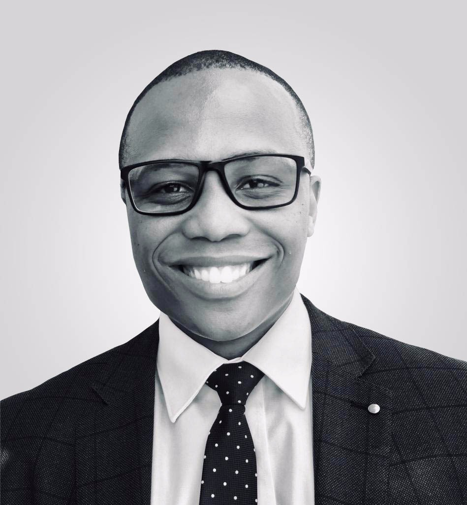

Athenkosi Makwenkwe | WDD 130
Hello! My name is Athenkosi Makwenkwe and I am from Pretoria, South Africa. I am studying Software Development at BYUi. I enjoy sketching, coding, going out on vacation with family.
Hello! My name is Athenkosi Makwenkwe and I am from Pretoria, South Africa. I am studying Software Development at BYUi. I enjoy sketching, coding, going out on vacation with family.